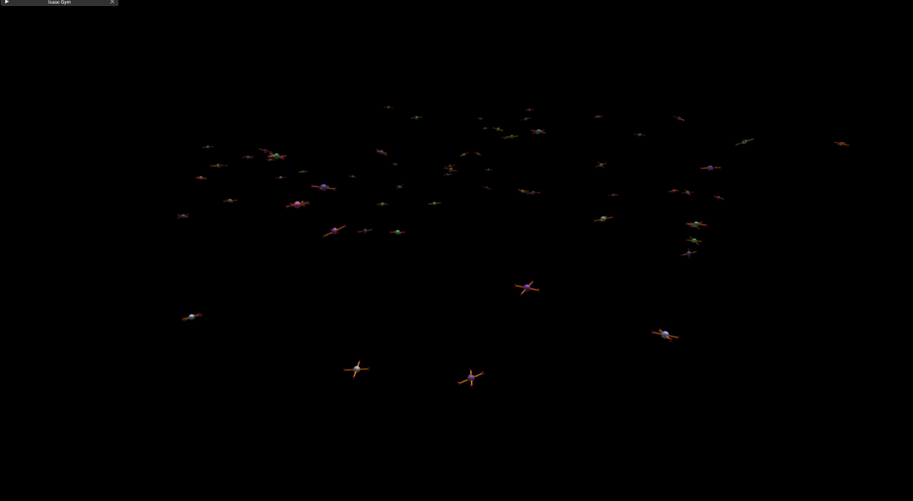

Getting Started¶
Installation¶
- Download Isaac Gym Preview 4 Release
-
Use the below instructions to install the Isaac Gym simulator:
- Install a new conda environment and activate it
- Install the dependencies
conda install pytorch==1.13.1 torchvision==0.14.1 torchaudio==0.13.1 \ pytorch-cuda=11.7 -c pytorch -c conda-forge -c defaults conda install pyyaml==6.0 tensorboard==2.13.0 -c conda-forge -c pytorch -c defaults -c nvidia # OR the newest version of PyTorch with CUDA version that supported by your driver if you like # conda install pytorch==2.3.0 torchvision==0.18.0 torchaudio==2.3.0 pytorch-cuda=11.8 -c pytorch -c nvidia conda install -c fvcore -c iopath -c conda-forge fvcore iopath conda install -c pytorch3d pytorch3d - Install Isaac Gym and dependencies
cd <isaacgym_folder>/python pip3 install -e . # set the environment variables for Isaac Gym export LD_LIBRARY_PATH=~/miniconda3/envs/aerialgym/lib # OR export LD_LIBRARY_PATH=~/anaconda3/envs/aerialgym/lib # if you get an error message "rgbImage buffer error 999" # then set this environment variable export VK_ICD_FILENAMES=/usr/share/vulkan/icd.d/nvidia_icd.json # Please add this your .bashrc or .zshrc # file to avoid setting the environment variables # every time you want to run the simulator - Test the installation If the above example runs without any errors, the Isaac Gym installation is successful.
Note "Change argument parser in Isaac Gym's
to 1. Create workspace directory and install dependency in the conda environmentgymutil.py" Before installing the Aerial Gym Simulator, a change needs to be made to the Isaac Gym installation. The argument parser in Isaac Gym interferes with the rest of the arguments that may be needed for other learning frameworks. This can be changed by changing line 337 ofgymutil.pyin theisaacgymfolder frommkdir -p ~/workspaces/aerial_gym_ws/src && cd ~/workspaces/aerial_gym_ws/src # Need to install urdfpy package from source owing to unresolved # issues with cylinder meshes representation with the pip-distributed release. # More info here: https://github.com/mmatl/urdfpy/issues/20 git clone git@github.com:mmatl/urdfpy.git cd urdfpy pip3 install -e . -
Download and install Aerial Gym Simulator
- Test an example environment
Running the examples¶
Basic environment example¶
Position control task example¶
Code for Position Control Example
from aerial_gym.utils.logging import CustomLogger
logger = CustomLogger(__name__)
from aerial_gym.sim.sim_builder import SimBuilder
import torch
if __name__ == "__main__":
env_manager = SimBuilder().build_env(
sim_name="base_sim",
env_name="empty_env",
robot_name="base_quadrotor",
controller_name="lee_position_control",
args=None,
device="cuda:0",
num_envs=64,
headless=False,
use_warp=False # since there is not supposed to be a camera in the robot for this example.
)
actions = torch.zeros((env_manager.num_envs, 4)).to("cuda:0")
env_manager.reset()
for i in range(10000):
if i % 500 == 0:
logger.info(f"Step {i}, changing target setpoint.")
actions[:, 0:3] = 2.0 * (torch.rand_like(actions[:, 0:3]) * 2 - 1)
actions[:, 3] = torch.pi * (torch.rand_like(actions[:, 3]) * 2 - 1)
env_manager.step(actions=actions)

The above example demonstrates how to create an empty simulation environment, select a quadrotor robot, and control the robot using a geometric position controller. In this example, the action variable is sent to the robot as the commanded position and yaw setpoint to track. This is changed every 100 iterations to a random position and yaw setpoint. The simulation is rendered at each iteration.
Rendering and Saving Images¶
Code for Rendering and Saving Images
import numpy as np
from aerial_gym.utils.logging import CustomLogger
logger = CustomLogger(__name__)
from aerial_gym.sim.sim_builder import SimBuilder
from PIL import Image
import matplotlib
import torch
if __name__ == "__main__":
logger.debug("this is how a debug message looks like")
logger.info("this is how an info message looks like")
logger.warning("this is how a warning message looks like")
logger.error("this is how an error message looks like")
logger.critical("this is how a critical message looks like")
env_manager = SimBuilder().build_env(
sim_name="base_sim",
env_name="env_with_obstacles", # "forest_env", #"empty_env", # empty_env
robot_name="base_quadrotor",
controller_name="lee_position_control",
args=None,
device="cuda:0",
num_envs=2,
headless=False,
use_warp=True,
)
actions = torch.zeros((env_manager.num_envs, 4)).to("cuda:0")
env_manager.reset()
seg_frames = []
depth_frames = []
merged_image_frames = []
for i in range(10000):
if i % 100 == 0 and i > 0:
print("i", i)
env_manager.reset()
# save frames as a gif:
seg_frames[0].save(
f"seg_frames_{i}.gif",
save_all=True,
append_images=seg_frames[1:],
duration=100,
loop=0,
)
depth_frames[0].save(
f"depth_frames_{i}.gif",
save_all=True,
append_images=depth_frames[1:],
duration=100,
loop=0,
)
merged_image_frames[0].save(
f"merged_image_frames_{i}.gif",
save_all=True,
append_images=merged_image_frames[1:],
duration=100,
loop=0,
)
seg_frames = []
depth_frames = []
merged_image_frames = []
env_manager.step(actions=actions)
env_manager.render(render_components="sensors")
# reset envs that have crashed
env_manager.reset_terminated_and_truncated_envs()
try:
image1 = (
255.0 * env_manager.global_tensor_dict["depth_range_pixels"][0, 0].cpu().numpy()
).astype(np.uint8)
seg_image1 = env_manager.global_tensor_dict["segmentation_pixels"][0, 0].cpu().numpy()
except Exception as e:
logger.error("Error in getting images")
logger.error("Seems like the image tensors have not been created yet.")
logger.error("This is likely due to absence of a functional camera in the environment")
raise e
seg_image1[seg_image1 <= 0] = seg_image1[seg_image1 > 0].min()
seg_image1_normalized = (seg_image1 - seg_image1.min()) / (
seg_image1.max() - seg_image1.min()
)
# set colormap to plasma in matplotlib
seg_image1_normalized_plasma = matplotlib.cm.plasma(seg_image1_normalized)
seg_image1 = Image.fromarray((seg_image1_normalized_plasma * 255.0).astype(np.uint8))
depth_image1 = Image.fromarray(image1)
image_4d = np.zeros((image1.shape[0], image1.shape[1], 4))
image_4d[:, :, 0] = image1
image_4d[:, :, 1] = image1
image_4d[:, :, 2] = image1
image_4d[:, :, 3] = 255.0
merged_image = np.concatenate((image_4d, seg_image1_normalized_plasma * 255.0), axis=0)
# save frames to array:
seg_frames.append(seg_image1)
depth_frames.append(depth_image1)
merged_image_frames.append(Image.fromarray(merged_image.astype(np.uint8)))
The robot sensors can be accessed through the global_tensor_dict attribute of the env_manager. In this example, the depth/range and segmentation images are saved as gifs every 100 iterations. The depth image is saved as a grayscale image, and the segmentation image is saved as a color image using the plasma colormap from matplotlib. The merged image is saved as a gif with the depth image in the top half and the segmentation image in the bottom half.
The created gifs from the sensor streams from the camera and LiDAR sensors are saved as below:


RL environment example¶
Code for RL interface example
import time
from aerial_gym.utils.logging import CustomLogger
logger = CustomLogger(__name__)
from aerial_gym.registry.task_registry import task_registry
import torch
if __name__ == "__main__":
logger.print_example_message()
start = time.time()
rl_task_env = task_registry.make_task(
"position_setpoint_task",
# other params are not set here and default values from the task config file are used
)
rl_task_env.reset()
actions = torch.zeros(
(
rl_task_env.sim_env.num_envs,
rl_task_env.sim_env.robot_manager.robot.controller_config.num_actions,
)
).to("cuda:0")
actions[:] = 0.0
with torch.no_grad():
for i in range(10000):
if i == 100:
start = time.time()
obs, reward, terminated, truncated, info = rl_task_env.step(actions=actions)
end = time.time()